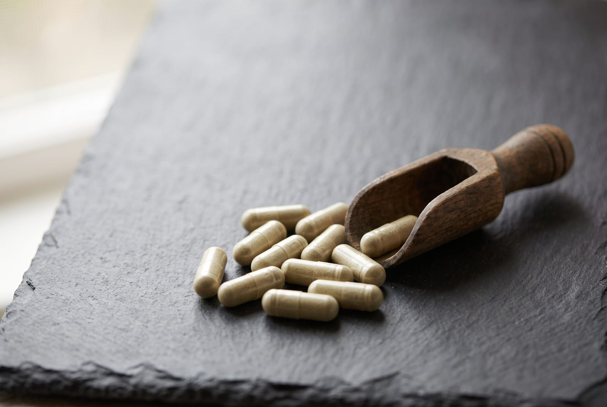
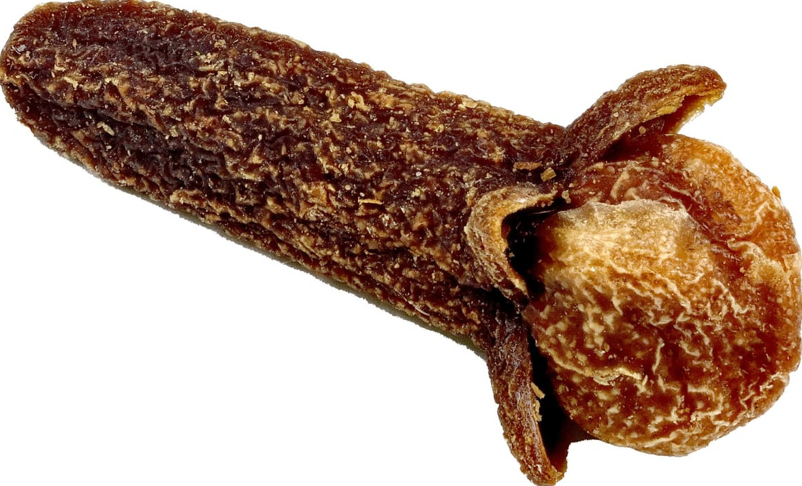
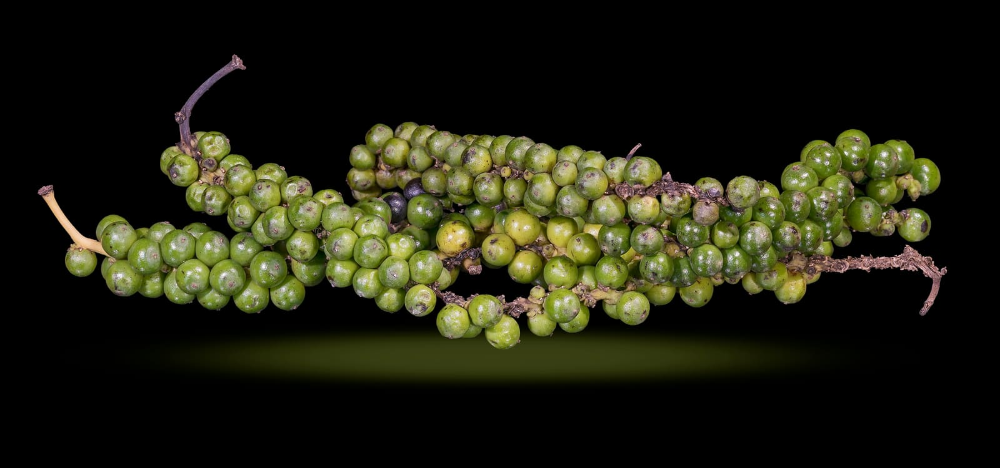
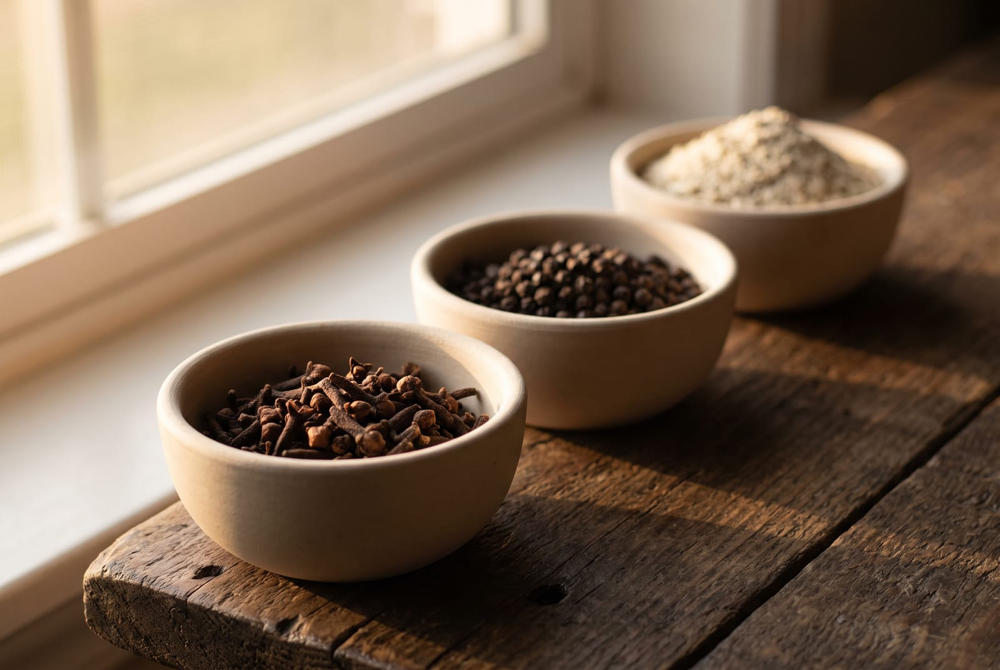
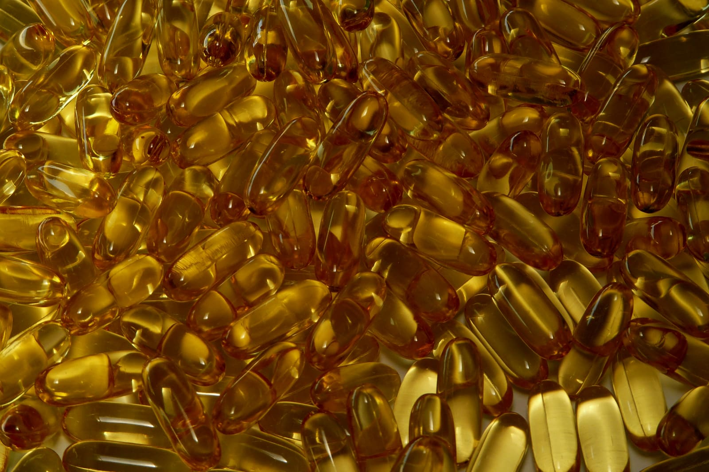

Know · Label notes
How to read a supplement label, and what the words are worth.
Half of what is printed on a jar in this country is there because the law puts it there. The other half is a word somebody chose because it sounds like it means something. This is how to tell the two apart while you are standing in the shop, what a nutrient reference value is, why no plant on my shelf has an approved sentence attached to it, and where my own labels come up short against the same list.
By Reiss Davies Ausar10 September 202614 minute read

A woman came into the shop in July with a tub she had bought online for thirty-eight pounds. She wanted to know whether it was any good. I turned it over, and in about forty seconds I could tell her four things: it did not name a species, it did not give a milligram figure, it listed a blend rather than ingredients, and the address on it was a mailbox. None of that is a verdict on the powder inside. It is a verdict on how much the person selling it was willing to tell her.
Reading a label is a skill anyone can pick up in an afternoon, and it is worth more than any amount of reading about ingredients. So this is the whole of what I know, in the order I would go through a jar. At the end I have put my own labels through the same list, because it would be a poor article that did not.
01A supplement is a food, not a medicine
That one sentence explains most of what follows. In this country a food supplement is regulated as a food. It is not a medicine, it has not been through a licensing process, and nobody has assessed it for what it does to a body.
There is a separate route for herbal products that want to say more. A herbal medicine can be registered with the Medicines and Healthcare products Regulatory Agency under the traditional herbal registration scheme, and if it has been, the pack carries a THR number and can say what the plant has traditionally been used for. It is a real process with a real cost attached. Nothing I sell carries a THR number. If you see one on a box, what you are holding is a registered medicine rather than a food supplement, which is a genuinely different class of thing, and the number is printed on the pack.
The other thing worth knowing before you start is that a jar has two labels, not one. There is the physical label on the pack, which is the legal document. And there is the listing on a website, which is written by whoever runs the website, often years earlier, and which is where nearly all of the trouble lives. My own shop site is a fair example of that, and I will come back to it.
02The parts that are not optional
Start at the back of the jar and look for these. They are required on prepacked food in Great Britain, and food supplements carry a few extra lines of their own. If one is missing, that is not a design decision.
- The name of the food. What the thing is, not what it is called. A brand name on the front does not count.
- The name "food supplement". That category name has to appear on the label itself, not just a brand name for the product.
- An ingredient list, in descending order of weight. Every ingredient, heaviest first. This is the single most useful line on any label and it is the one most often mangled.
- Allergens emphasised inside that list. Fourteen of them, and they have to stand out from the rest of the text, usually in bold.
- The nutrients or substances that characterise the product, per portion. Where any of them are vitamins or minerals, also given as a percentage of the NRV.
- The net quantity. Grams, millilitres, or the number of capsules.
- The portion recommended for a day, and a warning not to exceed it.
- The line about a varied diet. The regulations require a statement to the effect that the product should not be used as a substitute for a varied diet. Most of the trade, this shop included, prints the longer form: Food supplements should not be used as a substitute for a varied and balanced diet and a healthy lifestyle. That longer wording is permitted, not required.
- The line about children. Keep out of reach of young children.
- The name and address of the business responsible. A real address, and it is worth putting it into a map.
- A lot or batch mark, so that one bad run can be traced and pulled off shelves without recalling four years of production.
- A best before or use by date, and any storage conditions that matter once it is open.
I am a shopkeeper and not a lawyer, so take that as the list I work to rather than as legal advice. The regulations are public, the Food Standards Agency writes them up more clearly than I would manage, and your local authority's food team is the body that actually enforces them.

03Nutrient reference values, and why most of a jar has no number
If a label declares a vitamin or a mineral, it has to give you a quantity, and it has to give you that quantity as a percentage of something. That something is the nutrient reference value, the NRV. There is one figure per nutrient, set for a general adult population, and it exists so that two labels can be held up against each other by somebody standing in an aisle.
There is also a floor. A nutrient can only be declared at all if a portion carries a significant amount of it, which is a set proportion of the NRV rather than a trace. That rule is the reason a jar cannot list every element on the periodic table in small print and call it a specification.
For iodine the NRV is 150 µg a day. Seaking prints 75 µg of iodine in each capsule and 150 µg in the two you take, which is the only measured mineral figure on anything I sell. I have written a whole page about that one number and what it is worth.
Every other jar on my shelf prints no mineral figure at all. Not because there is nothing in the plant, but because nobody has measured this batch of it, and a figure I cannot stand behind is worse than a blank space. When you see a jar listing ninety-two minerals with no quantities beside any of them, that is a list nobody had to measure, and there is nothing in it you can check.
A number you can check is worth twenty adjectives. A list of minerals with no figures beside them is decoration.
04The register, and the plants that are not on it
Sentences about what a food does to a body are governed separately from the rest of the label, and there is a register of the ones that have been approved. In Great Britain it is a published list, it is free to read, and it is short. An approved sentence attaches to a named substance, comes with conditions about how much of that substance a portion has to carry, and cannot be reworded into something warmer.
No plant on my shelf has an approved sentence attached to it. Not sea moss, not reishi, not wormwood, not ashwagandha, not any of the roots or barks. Iodine is the one exception worth naming, because it is not a plant: it carries authorised sentences on the register, and a Seaking serving, measured at 150 µg, clears the threshold to use one. We print none here, for the same reason as the rest of this page, but the legal position is different for iodine than it is for anything above, and folding it into the same sentence would hide that. A large batch of botanical submissions went in years ago, was never assessed, and has sat in a holding category ever since. Businesses read that hold in different ways. I have taken the plain reading, which is that nothing has been approved, so I print nothing.
What that means in practice is that everything you have read online about what a plant does is one of three things: somebody's own account of their own experience, which they are free to give and I am not; a proposition nobody has proved to the standard the law asks for; or a sentence that is not allowed and is being printed anyway. I set that out at more length in the piece on the two sea mosses.

One consequence of that register is worth saying out loud, because it catches people out. A shop that prints nothing is not admitting its products are inert. It is telling you it has no approved sentence and is not going to invent one. A shop with a paragraph of physiology under every jar is not better informed. It is taking a risk with somebody else's health and its own registration.
05Not intended to diagnose is an American sentence
You will have read it a thousand times: this product is not intended to diagnose, treat, cure, or prevent any disease. It comes from the United States, where an act of Congress in 1994 set up a labelling regime for supplements, and where a label that makes a structure or function statement must carry that disclaimer alongside a line saying the statement has not been evaluated by the Food and Drug Administration.
It has no standing here at all. A sentence that is not permitted does not become permitted because a disclaimer follows it, and a food may not be presented as preventing, treating or curing a disease, disclaimer or no disclaimer. The one exception is an authorised reduction of disease risk claim, which is its own category with its own conditions, and a disclaimer is not what buys you into it. In this country the American sentence is a tell. It means somebody copied a template, or copied a competitor who copied a template.
It is on eighteen of my own live listings. I counted them off the shop site while writing this. Two of the eighteen are lumps of rock, which are not food and cannot diagnose anything, and that is how little thought went into putting the words there. Those listings predate this site and they are on the list to be rewritten. I would rather tell you the number than let you find it yourself.
06Proprietary blend, and what it hides
A proprietary blend is another American convention. Over there a manufacturer may group several ingredients under a blend name, give the total weight of the group, and not break out how much of each one is in it. The argument is that the recipe is commercially sensitive.
Here the ingredient list is supposed to name every ingredient in descending order of weight. A blend name is not an ingredient. It is a heading with the numbers removed.


Three things go missing inside a blend. How much of the dear ingredient is actually in there, which is usually the point. Whether the plant pictured on the front is most of the capsule or a pinch of it. And whether anything in the jar has a known interaction with what your GP has already prescribed you, which is the one that matters and which nobody can check on your behalf.

My own listings are not clean here. Four of them use the phrase: Equill, Feminina, Neptune and Respire, and two of the kits repeat it. Three name no plant whatsoever: Nutropic, Pancrea and Prostrate. Detox Redox names three ingredients out of what its own listing calls more than twenty. Every one of those specification sheets now says so in the ingredients row, in those words, because the alternative was to guess.
The one that annoys me most is the sea moss. The old listing for the Northern Soul gel described its algae as a proprietary blend, which was daft, because I know exactly what is in it and there is nothing secret about a list of four seaweeds. The specification sheet names all four.
07Wildcrafted, lab tested, and the words that promise nothing
Some words on a jar are controlled. Most are not. The difference is not how serious they sound, it is whether anybody outside the company has to agree before they can be printed.
| The word | Who has to agree | What it promises you |
|---|---|---|
| Organic | A certification body, whose code goes on the pack | A real, checkable process. This is what a controlled word looks like. |
| Wildcrafted | Nobody. It has no definition in food law | Nothing on its own. It is worth something only next to a harvest record: who picked it, where, and when. |
| Lab tested | Nobody. Not a defined term | Nothing until you see the certificate. Ask what was tested for, to what limits, and for which batch. |
| Non-GMO | Nobody, as a phrase | Little. Genetically modified ingredients have to be declared anyway, so the phrase mostly restates the law. |
| 100 per cent natural, no fillers | Nobody | Nothing you can check without the full ingredient list, which is the thing to read instead. |
| Vegan | Usually the business itself, unless a scheme mark is shown | Depends entirely on whose mark it is. There is no statutory definition behind the word. |
| Pharmaceutical grade | Nobody. It is not a grade that applies to food | Nothing at all. Treat it as a warning sign. |
Wildcrafted appears on eight of my own listings, counting the two that hyphenate it as wild-crafted, and I do not have a harvest record to put behind the word on a single one of them. That is not a defence of the word. It appears on one row of three sea moss specification sheets, where it means the one thing it can mean, not farmed, and I have no harvest record behind it even there. If a plant genuinely was picked wild, the honest form is to name the coast or the range and say who picked it.

Lab tested is the one worth pressing on, because for some products it is the whole question. Shilajit is a resin that comes out of rock, so the test that matters is for heavy metals: lead, arsenic, mercury and cadmium. Our listing says lab tested. The specification sheet now says what that means and adds the part nobody prints, which is that the certificate is not published on this site. Read those two words as a statement that testing happens, not as a result you have seen.
So ask for the analysis for your batch. Ask me, and ask whoever sold you the last one. A seller who has a certificate will send it in an afternoon. A seller who does not will send you a paragraph.

08How my own labels score
It would be easy to write this article about other people's jars. Here is the same list turned round on mine, taken from the specification sheets on this site, which are the honest version rather than the old shop listings.
| Check | Where we stand |
|---|---|
| Species named in Latin | On most jars, yes. Not on Acacia Bark, where the listing names no species at all, and not on Ginseng, where it does not say which Panax. Both pages say so. |
| Part of the plant named | Sometimes. Printed for pau d'arco (inner bark) and ashwagandha (root). Not printed for several others, and we have not filled the gaps in. |
| Milligrams a capsule | Printed on about half the range: 800 mg on most, 750 mg on Chaga and Equill. Not printed on the rest, and those pages say not printed rather than guessing. |
| Capsule count | Printed on some jars, missing on others, which is why several pages carry no cost per day. |
| Full ingredient list | Complete on the sea moss, the mushrooms, the single botanicals, Decolonise and two of the formulas. Partial on four. Absent on three. |
| A measured nutrient figure | One product on the whole shelf. Seaking, 75 µg of iodine a capsule. |
| A printed stop date | Decolonise: 25 days, then at least four months. Gumbo Limbo prints two short courses, 10 days on the twice-daily schedule or 20 days on the once-daily one. The Parasite Cleanse Kit prints a 25 day cycle. Nothing else needs one. |
| A certificate behind lab tested | Not published. The Shilajit page says so in the testing row. |
| A record behind wildcrafted | None. The word is on eight old listings, counting the two that hyphenate it, and on one row of three sea moss specification sheets, where it means the one thing it can mean, not farmed. I have no harvest record behind it even there. |
| An approved sentence about what any of it does | None, and there will not be one. See section four. |
That is not a good score. It is an honest one, and every gap on it is printed on the page it belongs to rather than collected quietly here. Some of them I can close by ringing a supplier and asking for a figure. Some of them I cannot close without paying for laboratory work on every batch, and a jar at £24.99 does not carry that cost. When I can close one, the sheet changes.
The reason to publish the list at all is that it gives you something to hold me to. If you come back in a year and the ingredient row on Nutropic still says not printed, that is a fair thing to raise across the counter, and I would rather you did.

Four labels, for four reasons
Not the four I sell most of. These are the four whose labels demonstrate the points above, including the one that comes out of it worst. I am not going to hide a jar in the shop while writing an article about honesty on jars.

Seaking
£39.99The only measured figure on the shelf. 50 vegan capsules at 800 mg, 75 µg of iodine in each and 150 µg in a serving, against an NRV of 150 µg.
See the specification
Shilajit Resin
£39.99The one that says lab tested. The testing row names what a resin is tested for and states plainly that the certificate is not on this site. Ask us for the analysis for your batch.
See the specification
Decolonise
£39.99The one with an end date printed on it. Nine named ingredients, 50 capsules at 800 mg, 25 days, then at least four months before the next jar.
See the specification
Nutropic
£39.99The one whose listing names nothing. The ingredients row says not printed, because the listing names no plant and we are not going to invent a list to fill the space.
See the specificationIf you have a jar at home and you cannot tell from the back of it what is in there, bring it to 599 Smithdown Road, Tuesday to Sunday, 10 to 6, or ring 07946 806533. It does not have to be one of ours. Reading a label with somebody takes a minute and I would rather do that than sell you a replacement.

Reiss Davies Ausar
Founder and formulator at Herbase. Trading online since 2019 and behind the counter at 599 Smithdown Road, Liverpool, since August 2024. Author of three books on herbal practice. Book an hour with him if you want to go into more detail.